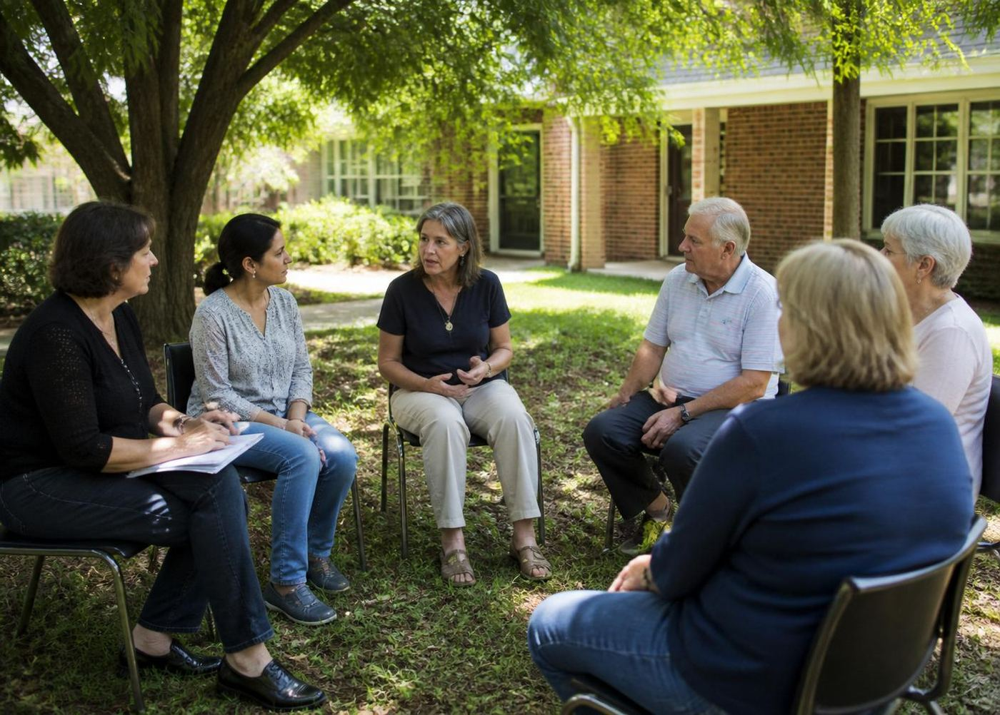

Atendimento humanizado
Uma equipe que escuta antes de tudo. Cada história recebe a atenção que merece.
Nossa equipe oferece atendimento humanizado, orientação personalizada e suporte em cada etapa. Com respeito, discrição e cuidado com você e sua família.
Fale pelo WhatsAppAtendimento rápido e reservado.

“Escutar com atenção,
orientar com respeito.”
Cada etapa é conduzida com escuta, respeito e discrição.
Você não precisa ter todas as respostas para começar.

Uma conversa reservada pelo WhatsApp para entendermos como podemos ajudar.
Nossa equipe escuta com atenção e oferece uma orientação para o seu momento.
Ajudamos você e sua família a conhecer as alternativas, com respeito e clareza.
Um suporte próximo em todas as etapas, com escuta e acompanhamento.
Um atendimento pensado nos detalhes.
Porque é neles que a confiança se constrói.

Uma equipe que escuta antes de tudo. Cada história recebe a atenção que merece.
Cada orientação considera o seu momento, sem fórmulas prontas.
Discrição em cada contato, com respeito à sua história e à sua família.
Profissionais preparados para oferecer suporte com respeito e clareza.
Informações objetivas, sem pressa e sem pressão para decidir.
Acompanhamento em todas as etapas, com escuta e apoio contínuo.

Uma equipe que escuta,
orienta e caminha com você.
Escuta atenta e orientação em cada conversa, antes de qualquer decisão.
Sua história é tratada com a discrição e o cuidado que merece.
Profissionais qualificados e atenção em cada detalhe do atendimento.


Cada história merece atenção, respeito e orientação adequada. Estamos aqui para acolher você e sua família, com um atendimento próximo, humano e personalizado.
“Escuta atenta, respeito e orientação em cada conversa.”Falar com nossa equipe
Algumas respostas para que você dê o primeiro passo com mais tranquilidade.
Basta enviar uma mensagem pelo WhatsApp. Nossa equipe responde com atenção e conduz a conversa com respeito, sem pressa e sem julgamentos.
O canal principal é o WhatsApp. Você pode usar qualquer botão de contato desta página ou ligar para nossa central: 0800 993 0103.
A discrição é um dos pilares do nosso trabalho. Todo contato e orientação são conduzidos com respeito à sua privacidade.
Depois do primeiro contato, nossa equipe oferece uma orientação personalizada, ajustada ao seu momento e às suas dúvidas.
Nossa equipe atende de segunda a sexta, das 08h às 18h. Você pode enviar uma mensagem pelo WhatsApp a qualquer momento; retornaremos assim que possível.
Sim. Você pode nos chamar pelo WhatsApp para entender melhor o atendimento. Explicamos cada etapa com clareza, sem compromisso.
Estar presente, respeitar o tempo do outro e abrir espaço para uma conversa sem julgamentos.
Ler artigoPequenos gestos de presença e diálogo podem abrir espaço para relações mais próximas.
Ler artigoUm convite para desacelerar e perceber os momentos simples que fazem parte da sua rotina.
Ler artigoPrévia editorial: os artigos e as datas são demonstrativos, para apresentação do layout.
Sem compromisso, sem pressa. Apenas escuta qualificada, respeito e orientação personalizada para o seu momento.
Falar com nossa equipeATENDIMENTO RESERVADO · RESPEITO À SUA HISTÓRIA